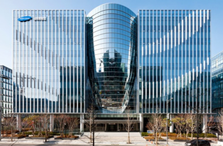

> 기술개발 > 연구소소개
연구소소개
한국 조선해양산업의 중심지
고부가가치 선박 및 해양플랜트의 핵심기술을 확보합니다.
조선해양연구소
조선해양연구소는 ‘사업과 연계한 연구개발 수행, 제품 경쟁력 강화를 위한 성능·원가경쟁력 제고, 스마트기술 접목을 통한 설계·생산 효율 극대화’를 목표로 설정하여 다양한 연구과제를 수행, 지속적인 연구개발 활동과 기반시설 확충을 통해 고객이 요구하는 품질과 최고의 제품 성능을 구현하기 위해 최선을 다하고 있습니다.
- 
-
- Battert System Test-Bed
- 대용량 리튬이온 배터리와 충방전 전력설비의 안전성과 효율성을 지속적으로 개선 검증하고, 다양한 선종에서 에너지 효율을 향상시킬 수 있는 EMS(에너지관리시스템) 알고리즘 기술 개발에 매진하고 있습니다.
-
- 예인수조
- 예인수조는 선형유도모터 구동으로 저소음·저진동이 특징인 고속선용 예인전차(최대 속도 18m/s)와 일반선용 예인전차(최대속도 5m/s), 대진폭 제어 조종시험대차와 실제 해상의 파도를 모사한 40분할 조파장치를 갖추고 있습니다.
-
- 공동수조
- 공동수조는 선체, 추진기 및 연료절감장치의 캐비테이션을 비롯한 유체역학적 성능과 수중방사소음 성능에 대한 평가 시험을 통해 프로펠러·러더의 캐비테이션 방지기술, 고효율 저진동·저소음 추진기 개발 등을 성공적으로 수행하고 있습니다.
-
- 모형 제작
- 모형시험으로 실제 선박성능을 추정하려면 실제 선박 및 추진기를 축소한 정밀모형이 필요합니다. 이를 위해 초정밀 10축, 5축 CNC Machine을 이용 10미터 길이 모형선과 최대 직경 0.3미터의 추진기를 신속하게 가공합니다.
-
- KOLAS 시공승인
- 삼성중공업 연구소는 KOLAS로부터 화학시험분야의 국제공인시험기관으로 인정받고 있으며, 공인기관에서 생산한 시험결과는 어떠한 재시험 없이 국제시험기관인정협력체로 부터 해당 공인성적서가 인정됨을 의미합니다.